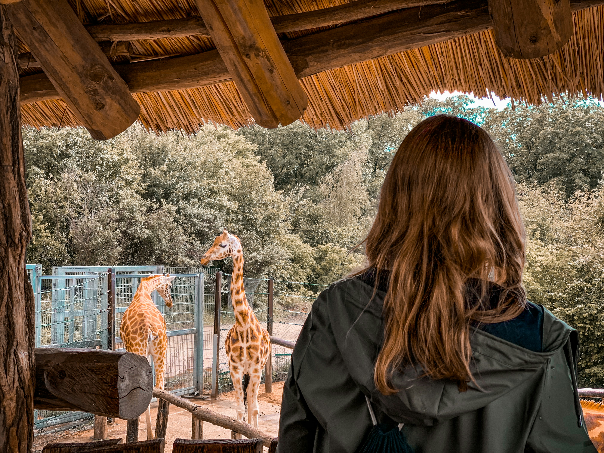
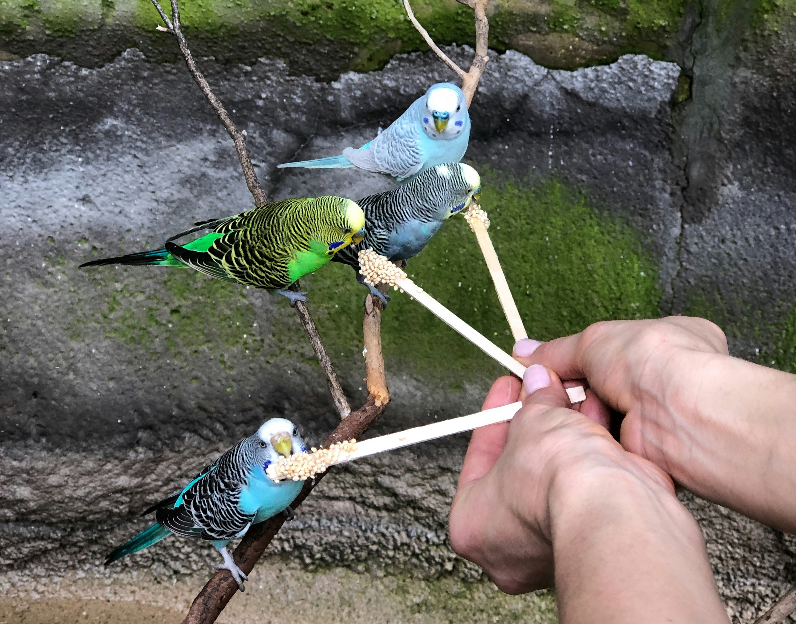

Our Vision
A world where every species is valued and protected. Pine City Zoo envisions becoming a leader in sustainability, wildlife conservation, and immersive educational experiences for all ages.

Founded in the heart of Pine City over 50 years ago, Pine City Zoo began as a humble community project with just a few rescued animals and passionate volunteers. Over the decades, it has grown into one of the region’s most beloved attractions, home to over 200 species of wildlife, both local and exotic. The zoo was built with a deep love for nature and a desire to bring people closer to the animal kingdom. Today, it stands not only as a place of wonder and education but also as a symbol of conservation and care. Whether you're a student, a tourist, or a lifelong animal lover, Pine City Zoo offers something magical for everyone. From lush walkways and spacious enclosures to hands-on exhibits and seasonal events, every corner of the zoo tells a story. And with every visit, we aim to inspire a new generation of wildlife protectors and nature enthusiasts.
To inspire care and understanding for animals and the environment by connecting people with wildlife. We aim to educate visitors and promote the conservation of biodiversity across the globe.
A world where every species is valued and protected. Pine City Zoo envisions becoming a leader in sustainability, wildlife conservation, and immersive educational experiences for all ages.